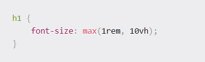
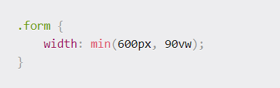

The max function accepts a list of comma separated values and returns the biggest one. Each value can also be an expression (whatever you can use as an argument for the calc() function can be one of the arguments in this function, too).The max function can be seen as a way to determine a minimum value for a certain thing. A use case for this function is making a text responsive, while giving a minimum value to the dimension.
For example:
In this way, the text will be a tenth of the viewport height, unless the viewport height becomes too small. The text will always have a font-size of at least 1rem to ensure legibility.
In the same way as the max function, the min function can take any number of arguments, including other max, min, or clamp functions, and give back the smallest value between them. The min function can be seen as determining a maximum value. For example, let's say that you are creating a form and you want it to be responsive while the screen width changes. You'll want to give it a maximum width to avoid that horizontally stretched look that can happen on the largest screens.
Your page will have a width equal to 90% of the viewport width, or 600px wide, whatever is smallest. So if the viewport width is larger than ~670px, the form will not stretch horizontally.
The clamp() method is used to clamp the value between an upper and lower bound. It takes three parameters which are listed below:
The minimum value comes in handy when the preferred value is smaller than the minimum value similarly maximum value comes in handy when the preferred value is more than the maximum value. The preferred value becomes useful when it is between the minimum and maximum value. The clamp() function can be used with the various elements such as font-size, width etc.
These functions are really useful in responsive layouts, and can be an alternative to using media queries. If we learn to use them appropriately we can avoid the jumpy change of layout that can happen when resizing a window if you used media queries, and with less code!